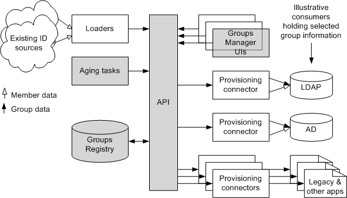
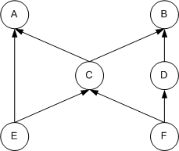

draft-internet2-mace-dir-grouper-phase1-specs-05.html
11 April 2005
Tom Barton & blair christensen, editors
The University of Chicago
Comments to: tbarton@uchicago.edu or blair@uchicago.edu
Grouper Phase 1 Specifications
1.
Introduction to Grouper phase 1
Grouper v1 will be produced in three phases, as
described in [1]. This document defines the phase 1 functional
specification in some detail. We'll start with a brief review of
Grouper's architecture - its major components and how those fit into an
implementation site's infrastructure - and then introduce the
underlying data model, the roles & privileges internal to Grouper,
define its "base group type", how its security is structured, and
continue on to elaborate the classes and methods of the Groups API java
implementation. The specification will conclude with several sections
of miscellany.
Phase 1 implements basic groups management capabilities - creation,
update, and removal of groups from the Groups Registry, subgroups,
export and limited querying capabilities, a graphical user interface
for manual groups management, and logging. It will also include sample
batch programs for loading data into and extracting data out of the
Groups Registry.
Three internal functions of Grouper phase 1 are abstracted to enable
sites to provide local alternatives to the default implementation.
These are the Access and Naming Interfaces, which informs the
Grouper API of the
group management privileges a subject has, and the Subject
Interface, which translates between identifiers chosen by sites for
member objects and an alternate form of identifying the same real world
subjects. For example, a member identifier might consist of a long,
opaque string of hex digits that persistently identifies its real world
subject, while more familiar usernames are used by people and systems
external to Grouper to identify group members.
At points it may be wise to look ahead towards phases 2 and 3, to be
sure that phase 1 design choices don't make it too hard to meet
functional requirements of these phases. Phase 2 adds support for
compound groups, i.e., specifying membership in terms of unions,
intersections, and complements of memberships of other groups. It's at
this point that we also ensure that Grouper v1 will meet requirements
to integrate with Signet, the privilege management system being
developed for Internet2/MACE by Stanford University that is a
derivative of their Authority Manager. Phase 3 adds support for aging
of groups and of group memberships, and includes abstraction of a
fourth function internal to Grouper, the Last Activity Interface, which
is
used to determine when a group has become "stale".
This version of the phase 1 specification does not address the
graphical user interface.
2.
Components & architecture
Figure 1 below labels the main components of
Grouper v1 and shows
them in relation to the rest of an illustrative site's identity
management infrastructure. It is a simplification of the architecture
presented in [2]. The Groups Registry is a relational database that
houses all group information. The API mediates all access to the
Registry. Loaders are used to determine updates to groups and their
memberships from automated sources of identity information. UIs are
used for distributed manual management of groups and their memberships.
Provisioning connectors extract selected group information from the
Registry and repose it where it is needed to support run-time
operations of a site's applications and services.

Figure 1: Grouper v1 components
(shaded) and articulating elements.
The shaded elements will be delivered as part of Grouper v1 (although
it is expected that sites will use their favorite relational database
technology to house the Registry). Loaders,
provisioning connectors, and alternate Groups Manager UIs are being
solicited for contribution. It is likely that the University of Chicago
will contribute an LDAP provisioning connector, for example.
Two details in
Figure 1 deserve comment. First
is the multiplicity of
Groups Manager UIs. These reflect a capability of the underlying data
model that allows a site to extend the set of group fields and group
types. It is possible to define new fields, associate them with new
group "types", and create and manage groups of these types. Where this
is
done, it may be necessary to provide UIs designed to manage groups of
the new types. However, Grouper v1 will only deliver the capability to
manage groups of a single "base" type.
The second detail is the nature of the arrows emanating from two of the
provisioning connectors. Both "member data" and "group data" are
depicted as updated information being provisioned in this illustrative
site. This reflects how the site may choose to represent group
information - as some mix of "group objects", which list their members,
and group membership pointers or forward references, which are stored
alongside other information about member objects. Provisioning
connectors are responsible for determining which types of
representation are maintained for a given group, and for maintaining
referential integrity between different representations of the same
group.
3. Groups
Registry data model
This section serves to orient the reader
to the underlying data model. Some of the details of this structure
will be explained here, but more will be provided below, in the context
of specifying how each of the API's methods work. Note that all table
names have been "firewalled" from possible conflict with RDBMS system
table names by using a prefix of "grouper_" on all table names.
The central table is grouper_group, which lists the groupIDs of each
group in the Registry. GroupIDs are assigned and managed by Grouper -
they are its native and persistent group
identifiers.
The "compoundExpr" and "flattenedExpr" columns in the grouper_group
table are speculative support for Grouper phase 2, and so can be
ignored for now.
Information about each group is contained in associated rows of the
grouper_membership and
grouper_metadata tables. The grouper_membership table contains all
fields whose
values
are lists of member references, and grouper_metadata contains all
other fields (currently limited to single-values). The "groupField"
column of the
grouper_membership table identifies which list of member references
each row pertains to. Likewise, the "groupField" column in the
grouper_metadata table identifies which field each row
refers to. More will be said about representation of
membership below.
Most externally exposed management
functions refer to a group by its name rather than by its groupID
value. The name is a field stored in the grouper_metadata table. Group
names are meant to be
something like a common name - a readable and perhaps semantically
meaningful string of characters that is unique among other group names.
Much more is said below about conventions
for names of groups.
The grouper_schema table identifies the set of group types that
each
group has. The set of group types available in the system is expressed
in three tables: grouper_types, grouper_fields, and grouper_typeDefs.
Grouper v1 will ship with a single group type named "base". Thus, its
grouper_fields table will list the fields included in the base type,
the grouper_typeDefs table will associate all of those fields with the
"base" type, and the grouper_types table will have a single row
identifying "base" as the sole type being managed by Grouper. Sites can
extend these tables to support additional types of groups if they wish.

Figure 2: Groups Registry Entity
Relationship Diagram. Grayed out tables not under discussion in phase 1.
The grouper_members table is present to support the default
implementation of the Subject Interface. Group members that are
external to Grouper (i.e., not other groups) are identified by their
site-supplied memberID. The columns of this table associate a
"presentationID" to each memberID. This enables sites to maintain
groups
by reference to persistent identifiers (the memberID column) yet refer
to members also by other, perhaps more lucent or changeable,
identifiers such as
usernames (the presentationID column). A batch program is supplied with
Grouper to maintain this table until such time as a site re-implements
the Subject Interface, for example, to refer to an LDAP directory
service for that function.
The grouper_session table is used to track simultaneous use of the API
and facilitates some logging. The grouper_aging and grouper_factor
tables are speculative support for functional requirements in Grouper
phases 2 and 3 and can be ignored for now.
4. Representing membership
Group members are
identified either by
memberIDs that are assigned outside of Grouper or by Grouper-issued
groupIDs. Separate
columns are used for them
in the grouper_membership table to keep them separate, but there is a
common
index
across both columns to simplify searching for a member reference that
may be of either sort. Each row of the grouper_membership table will
have a value in only one or the other column - not both. Certain API
methods also provide support for occasions on which it is necessary to
distinguish between a member reference that is a memberID and one that
is a groupID.
Grouper maintains a "flattened" representation of group membership at
all times. This is a statement about how subgroups are represented in
the data model. To explain, let's first be clear about some
terminology. The relationship "is a member of" can be modeled as a link
in a directed graph whose nodes are groups and members. For example, in
Figure 3 the object "C" is a member of both "A"
and "B".

Figure 3: A digraph illustrating
membership.
One can follow links around the digraph - each such walk is called a
"path". The length of a path is the number of links it traverses. With
this notion, paths of length 1 represent "immediate memberships" and
paths of length at least one connect nodes having an "effective
membership" relationship. Of course, it is possible to have both. For
example, "C" is an immediate member of "A" while "F" is an effective
member of "A", and "E" is both an immediate and an effective member of
"A".
Back to what is meant by a "flattened" representation. This means that
each membership, either immediate or effective, is represented by a
single row in the grouper_membership table. Specifically, there is
exactly one row signifying the membership of M in G if there is a path
of any length starting at M and ending at G. As loaders or UIs add a
member to a group, the effective memberships that also result are
determined at that time, and rows expressing them are added to the
table as needed. Likewise, as a member is removed from a group,
appropriate rows expressing effective membership are removed from the
table. Similar impact on effective membership is tracked when a group
is made a subgroup of another group, and when a group is removed from
the membership of another group. The "isImmediate" column of the
grouper_membership table indicates
whether M is an immediate member of G, whether or not it is also an
effective member.
The notion of a "via set" is used to support the
management of the
grouper_membership table. For a membership (M in G), consider the set
of paths from M to G of length greater than 1. The set of all "first
steps" along these paths is a set of immediate memberships that M has.
These "qualify" M's effective membership in G - you can get from M to G
"via" any one of these first-step groups. For example, in Figure 3
above the via set of ("F" in "B") is {"C", "D"}. If M is an immediate
and not also an effective member of G, then the via set for this
membership is empty.
The via
set is maintained by the algorithm that determines changes to
effective membership consequent to a change in immediate membership of
a group. As new immediate memberships cause
new effective memberships or new qualifications for existing effective
memberships, groups are added to affected via sets. As immediate
memberships are removed, corresponding groups are removed from affected
via sets. A row
representing an effective membership in the membership table whose
"isImmediate" column is FALSE is removed
when the last group in the via set for that membership is removed.
[ The data model in Figure 2
represents via sets in the grouper_via
table, but it might prove expedient to represent one as a string
listing
the groupIDs in the via set in a "via" column in the grouper_membership
table - we're still thinking about which way to do it. ]
With a flattened grouper_membership table and with via sets associated
with each effective membership, two purposes are served. First, there
is
no need to recurse over subgroups at export time or query time,
optimizing reporting on immediate and effective membership. Second, the
via set can be used to give a clue to a human using a UI about how a
member's
effective membership is established, and so avoid having to search
through the
subgraph of subgroups of a group if they intend to remove that
membership.
5.
Grouper API naming and access privileges
Each subject that exercises the Grouper API is constrained in what
it can do with the Groups Registry by the privilege(s) it has with
respect to each group. These privileges are divided into two classes:
those bearing on the creation of new groups, and those constraining
what can be done to an existing group. The Naming Interface provides
management of group naming rights and the Access Interface provides
management of access privileges to existing groups.
A list of Grouper privileges and
their definitions follows. Some of the definitions refer to a "security
class". This is a bit of metadata about each of a group's fields that
is specified with each field declaration further below.
Privilege
|
Interface
|
Description
|
CREATE
|
Naming
|
Can create a group with a
specified name stem.
|
STEM
|
Naming
|
Can grant and revoke CREATE
privilege for a specified name stem, and can grant and revoke STEM
privilege for
a subordinate stem if the configuration enables hierarchical group
naming.
|
VIEW
|
Access
|
The group is not suppressed from
appearing in listings &
searches, and it may be added to another group's list fields.
Essentially, the group
is invisible to non-VIEWers but may be seen and referred to by VIEWers. |
READ
|
Access
|
Can read all fields of
"membership" or "basic" security class about the group.
|
UPDATE
|
Access
|
Can update all fields of
"membership" security class, and can grant and revoke VIEW, READ,
UPDATE, OPTIN,
and OPTOUT
privilege for the group.
|
ADMIN
|
Access
|
Can modify all group fields,
including fields of "administrative" security class, can grant and
revoke all
access privileges, can rename the group, and can delete the group.
|
OPTIN
|
Access
|
Can add oneself as a member of
the group.
|
OPTOUT
|
Access
|
Can remove oneself from the
membership of the group.
|
Table
1: Grouper Naming & Access Privileges
Thus, UPDATERs administer membership of a group,
including management of membership information, delegation of
management of
membership information, and management of visibility of
group information. Group visibility or privacy requirements are met by
management of VIEW (those who can see a group) and READ (those
who can read a group's information) privileges. The
management of essential group metadata, including its name, and
the ability to override administration of membership is reserved for
ADMINs. This access privilege model also supports
groups for which administratively determined groups of subjects can
autonomously opt-in or opt-out of the group's membership. For example,
one group might be
established whose members are those entitled to use a particular
service, and a second group, for which all members of the first group
are given OPTIN privilege, is used as a basis for run-time
admission to the service. Only subjects that have opted-in are actually
enabled to use the service. Another example mimics the behavior of
mail lists: the set of subjects
entitled to subscribe are given OPTIN privilege (perhaps all members of
the
university community), and all members of the group are given OPTOUT
privilege, thereby allowing all subscribers to autonomously opt-out.
All group names in Grouper have two parts: stem and descriptor.
These are concatenated into a string, separated by a configurable stem
delimiter character, to form the name of the group. We'll use the colon
character ":" in this document as the stem delimiter. For example, the
name "uofc:faculty" has a stem of "uofc" and a descriptor of "faculty".
This naming model and the associated naming privileges are chosen in
recognition of the fact that people will try to infer the meaning of a
group and its source of authority from its name (hmm, "uofc:faculty"
seems like it must be all faculty at the University of Chicago). The
naming model enables management of authority over the set of stems in
use (STEM privilege) and over who may create new groups or rename old
ones starting with which stems (CREATE privilege).
The naming privilege model also supports hierarchical delegation of
limited naming authority. If so enabled in the configuration, the space
of stems is not flat but hierarchical, with a configurable character
delimiting hierarchical stem parts. We'll use the hyphen character "-"
in this document for illustration. For example, "uofc-bsd" is a stem
subordinate to "uofc", and "uofc-bsd-obgyn" is subordinate to
"uofc-bsd". When hierarchical stems are enabled, the STEM privilege can
also be used to delegate STEM privilege to a subordinate stem. For
example, a person with STEM privilege for "uofc-bsd" can assign to
another person STEM privilege for the subordinate stem
"uofc-bsd-obgyn", thereby delegating the ability to manage groups named
"uofc-bsd-obgyn:*" and "uofc-bsd-obgyn-*:*".
The API enforces uniqueness of group names across the Groups
Registry as well as uniqueness of all stems of group names.
The following characters are deemed
illegal for use in names of groups, unless chosen as the stem hierarchy
delimiter: "/", "\", "|", "?", "*", ";", ",". Stems and
descriptors may not contain the stem delimiter character.
Grouper's default implementation
of the Naming and Access Interfaces is described
further below,
as well as how each privilege is mapped to field-level information
about each group.
6. Definition of the "base" group type
All groups in the Groups Registry have a base type. The
essential fields of groups of base type are:
groupField
|
security class
|
Description
|
| name |
basic |
string name. Uniqueness enforced
within the Groups Registry.
|
| description |
basic
|
arbitrary string, perhaps used
to aid humans in understanding the semantics of this group.
|
| members |
membership
|
list of members (memberIDs or
groupIDs), those who "belong" to this group. |
Table
2: Fields for base type
In addition, to support Grouper's default implementation of the Access
Interface (described below), the following fields are also part of the
base
group type:
groupField
|
security class |
Description
|
| viewers |
membership
|
list of members (memberIDs or
groupIDs) with VIEW privilege for
this group. An empty list either means "nobody" or "everyone" depending
on the configuration. |
| readers |
membership
|
list of members (memberIDs or
groupIDs) with READ privilege for
this group. An empty list either means "nobody" or "everyone" depending
on the configuration. |
| updaters |
membership
|
list of members (memberIDs or
groupIDs) with UPDATE privilege for this group. An empty list means
"nobody". |
| admins |
administrative
|
list of members (memberIDs or
groupIDs)
with ADMIN privilege for this group. An empty list means "nobody". |
| optins |
membership
|
list of members (memberIDs or
groupIDs) with OPTIN privilege for this group. An empty list means
"nobody". |
| optouts |
membership
|
list of members (memberIDs or
groupIDs) with OPTOUT privilege for this group. An empty list means
"nobody". |
Table
3: Additional base type fields that list privileges for the default
Access Interface
The members, viewers, readers, updaters, deleters, optins, and
optouts lists are all
represented in the grouper_membership table.
With regard to the privilege lists in Table 3,
being in the
grouper_membership table enables any group of subjects to be identified
as having the corresponding
privilege with respect to the group.
The name and description fields
are stored in the grouper_metadata table.
Being lists, viewers,
readers, updaters, admins, optins, and optouts may
contain a mix of memberIDs
and groupIDs. Appearance of a groupID in any of these lists means that
all effective members of that group are to be counted as having the
privilege conveyed by being in that list.
7.
Grouper
security
There is a fundamental issue of what identifiers are
used for
subjects
of Grouper security. To
avoid
the need to manage passwords within the Groups Registry, authentication
to a Groups Manager UI is presumed to occur outside of the Grouper API.
The UI
must present a
subject identifier to the API that resolves to a memberID by use of the
Subject Interface. For the default Subject Interface implementation,
this
supports the circumstance in which either
memberIDs or presentationIDs are used to authenticate to the UI.
Loaders and provisioning connectors must have memberIDs assigned in
the members table to enable the security
model to also apply to them. However, no API-mediated
authentication of those identifiers will occur - it is assumed that the
site will use local measures to restrict access to the API process
itself. Thus, loaders, provisioning connectors, and UIs are trusted by
the API,
and subject identifiers are accepted from these sources by the API.
Read and write
access is declared for each field using columns in the
grouper_fields
table
named "readPriv" and "writePriv". Each identifies a single privilege
that
a subject must have in order to be granted read or read/write access to
the associated field. For the base
type, the per field security declaration is as follows, specified
as rows of the fields table. These implement the "security class"
specification used in Tables 1, 2, and 3 above, and can be
changed by
an implementation
site.
| groupField |
readPriv |
writePriv |
name
|
READ
|
ADMIN
|
description
|
READ |
ADMIN |
| members |
READ |
UPDATE |
viewers
|
UPDATE |
UPDATE |
| readers |
UPDATE |
UPDATE |
| updaters |
UPDATE |
UPDATE |
| admins |
ADMIN |
ADMIN |
optins
|
READ |
UPDATE |
optouts
|
READ |
UPDATE |
Table
4: Field level access mapping
This arrangement enables the security model to be declared for new
fields that may be
a part of a new group type.
8. Default implementation of
the Naming & Access Interfaces
Not surprisingly, Grouper's default implementation of these interfaces
will leverage Grouper's core competency: groups will be used to aid in
naming and access management.
The default naming interface within Grouper distinguishes between
"personal" groups and all others in terms of how it provisions CREATE
and STEM privileges within the Groups Registry. Two configurable
options
are whether personal group creation is enabled, and if so, under what
stem are all personal groups subordinated. For discussion assume that
this stem is the string "personal". To a subject identified as
"presentationID", say, Grouper then grants CREATE privilege for the
stem "personal-presentationID", permitting that subject to create
groups named "personal-presentationID:aDescriptor". No STEM privileges
are granted in support of personal groups, which means that individuals
may not delegate to others any ability to create or rename groups
within their personal group namespace.
For all other groups, Grouper relies on a set of "grouperCreator"
groups to provision CREATE and STEM privileges. Subjects that are
effective members of the group named "grouperCreator:aStem" are granted
CREATE privilege for the stem "aStem". If hierarchical stems are
disabled in the configuration, the same subjects are also granted STEM
privilege. If hierarchical stems are enabled, subjects that are
effective members of the group named "grouperCreator:aStem-" are
granted STEM privilege for the stem "aStem". For discussion, "-" is
assumed to be the configured stem delimiter character.
To bootstrap the ability to create groups named with stems other
than those conveying personal authority, Grouper ships with a group
named
"grouperCreator:grouperCreator" containing a single member named
"grouperSystem", and grouperSystem appears in the as-shipped members
table. Hence, the API can be accessed as the grouperSystem subject to
create other groups with stem "grouperCreator", thereby allowing the
API or UI to be used to create new stems, assign subjects the privilege
to create groups named with those stems, and delegate stem creation
privileges. Other subjects can be added to this group to make them also
fully authoritative over group naming privileges for non-personal
groups.
The default access interface within Grouper uses the list-type
groupFields defined in Table 3 above to
determine who has which access
privileges. Except for the exceptions noted below, a subject has a
given access privilege if and only if they effectively belong to the
corresponding list. For example, a subject has the UPDATE privilege
with respect to a group precisely when they are effectively a member of
that group's "updaters" list. It also follows that no one has an access
privilege if the associated list is empty. There are two configurable
exceptions to this rule. Empty "viewers" or "readers" lists can be
configured to mean either "nobody" or "everyone", allowing a site to
determine their own approach to default VIEWing and READing privilege:
either default-permit or default-deny.
The grant and revoke methods for Grouper's default naming and access
interfaces support reference to individual subjects and to groups.
Thus, the full capability of Grouper to manage lists, including
effective membership, subgroups, and compound groups, can be used to
facilitate the management of privilege assignment.
The "grouperSystem" internal
subject described above always has
CREATE and STEM privileges for all name stems, and ADMIN privilege to
all groups - the API will not actually query the Naming or Access
Interfaces to
determine the privileges of this distinguished subject.
9.
Grouper API
classes and methods
Most API operations act as a set of interactions among java objects
of
three classes: GrouperGroup, GrouperMember, and GrouperSession. Each
GrouperGroup object represents a single group - either an existing one
in the Groups
Registry, or a new one to be added to the Groups Registry. A
GrouperMember
object represents a single member object which might itself be a group.
A GrouperSession object is
instantiated to initialize an API session for a subject. Methods
supporting naming & access privileges and subject lookup are
encapsulated within GrouperSession objects.
The full list of classes and interfaces
follows, together with brief descriptions of each. Short paragraphs further below orient
the reader to the role of each class in the API and
highlight certain methods
associated with each class. A more detailed and comprehensive technical
specification is
contained in the Grouper
API javadoc, and
examples
of java code exercising some of the main functions of the API
should help to further clarify its use.
The API as documented in this version of
the Grouper Phase 1 specification is considered to be not yet stable.
That is, although we don't expect there to be any further huge changes
to the public API, there will yet be several substantial ones. We
haven't quite completed its first thorough going-over, and some
corrections already identified haven't yet been reflected in the
javadoc.
Class
|
Description
|
Grouper
|
Initialize the API by reading
configuration and constructing an executive GrouperSession object.
|
| GrouperSession |
Initialize an API session for a
subject, establish a JDBC connection to the Groups Registry for this
session, encapsulate methods for subject lookup and naming & access
privilege management.
|
| GrouperGroup |
Represents a group's data and
management methods.
|
GrouperMember
|
Represents an object, either an
individual or a group, that can be a member of a group. |
InternalGrouperNaming
|
Default implementation of the
GrouperNaming interface.
|
InternalGrouperAccess
|
Default implementation of the
GrouperAccess interface. |
InternalGrouperSubject
|
Default implementation of the
GrouperSubject interface. |
GrouperStem
|
Represents a string that can
serve as the stem portion of a group name.
|
GrouperDescriptor
|
Represents a string that can
serve as the descriptor portion of a group name. |
GrouperPrivileges
|
Represents an enumeration of
Grouper naming and access privileges.
|
GrouperFieldPrivileges
|
Represents an enumeration of
Grouper groupField level access privileges.
|
| GrouperType
|
Represents a row in the
grouper_types table.
|
| GrouperTypeDef
|
Represents a row in the
grouper_typeDefs table. |
| GrouperField
|
Represents a row in the
grouper_fields table |
Table
5: Grouper phase 1 classes
Interface
|
Description
|
GrouperNaming
|
Specification of the Naming
Interface, which governs privileges for group creation and naming
authority.
|
GrouperAccess
|
Specification of the Access
Interface, which governs access privileges to extant groups.
|
GrouperSubject
|
Specification of the Subject
Interface, which provides a translation service between "memberIDs" and
"presentationIDs" assigned to subjects.
|
Table
6: Grouper phase 1 interfaces
Grouper.
Each API instance has a single Grouper object. This object is used to
construct GrouperSession objects for each new subject having an API
session. It also provides methods to enable API clients to read
elements of the configuration file and the logical structure of the
Groups Registry as expressed in the grouper_types, grouper_typeDefs,
and grouper_fields tables.
GrouperSession.
A GrouperSession object is constructed at the start of each API client
session. A subject using the session must be specified - this subject's
naming and access privileges constrain what the API will do during this
API session. A JDBC connection to the Grouper Registry is opened for
each session. The session object provides methods to grant, revoke, and
review naming & access privileges of any subject.
GrouperGroup.
To work with a
group, a GrouperGroup object must be constructed that references a
GrouperSession. The access privileges to this group that are assigned
to the session's subject are cached in the GrouperGroup object to
optimize access
control performance, and the object provides a method to express
those privileges in terms of field-level access the session's subject
enjoys with respect to this group. Methods provide read/write access to
all group fields, to determine immediate or effective membership of the
group, and to create or destroy the group.
GrouperMember.
This represents an object that can be either an individual subject or a
group. Its methods provide means of listing the object's immediate and
effective memberships, the object's via set,
and whether it represents a group or an individual subject.
whoAmI method. Several classes
implement a whoAmI method that returns an identifier for the object
that can be used in other Grouper API methods. This helps to maintain
the distinction between Grouper's internal groupID identifier and the
group name and helps to enable API clients to specify groups by
reference to their names.
addValue, removeValue, and
getMembership polymorphism. Together with getMetadata(), these
methods provide comprehensive read/write access to a group's fields.
The simplest form refers to the "members" field by default,
anticipating that the largest number of API operations will be to
manage group membership lists. Other forms allow list fields other than
"members" or a metadata field to be specified. The getMembership method
by default lists all effective memberships, whether applied to a group
to list its members or applied to a member object to list its
memberships. It can also be invoked in a form specifying that only
immediate memberships should be listed.
GrouperAccess.
This interface specifies methods for granting and revoking an access
privilege to a group for a subject, and several forms of determining
existing access privileges. By its use of GrouperMember objects, the
interface supports assignment of access privileges to groups as well as
to
individual subjects.
GrouperNaming.
This interface specifies methods for granting and revoking a naming
privilege to a stem for a subject, and several forms of determining
existing naming privileges. By its use of GrouperMember objects, the
interface supports assignment of naming privileges to groups as well as
to
individual subjects.
GrouperSubject. This interface
specifies the single, polymorphic, lookup() method, which is used to
translate between memberIDs and an alternate means of identifying
individual subjects. This enables a site to specify membership using a
system of identifiers distinct from other systems that may be in common
use. The main example is of a site that uses opaque and persistent
identifiers for specifying membership that are unknown to most users of
the Grouper UI. The GrouperSubject interface permits translation of a
well-known identifier, such as a username, to its memberID equivalent.
Exceptions still need to be detailed.
10. Logging specifications
TBD
Thoughts from a mace-dir-groups
conf call on the subject:
- session start/end records:
who (UI user, loader, etc) is using grouper when
- registry changes for
interactive sessions
- registry changes for batch
sessions, with different log level
- distinguish between debug
logging and audit logging
- "sensitive" groups -
differential logging detail depending on the group being managed.
- how much can we rely on
logging on the underlying database?
11.
Members table maintenance program
TBD
12. Configurable
options
Under construction. These are just reminders for us to not forget to
detail later on.
- do personal groups?
- personal stem, e.g., personal-tbarton:blah
- do hierarchical stemming?
- stem hierarchy delimiter
- stem hierarchy depth
- where's the registry?
- empty viewers list default semantics: "nobody" or "everyone"
- empty readers list default semantics: "nobody" or "everyone"
13.
Database
creation script details
Under construction. These are just reminders for us to not forget to
detail later on.
- principal for API
- principal for members table maintenance program
- specify column width & syntax, indices, linkages
14.
References
[1] "Grouper Roadmap", Tom Barton, editor
http://home.uchicago.edu/~tbarton/draft-barton-grouper-roadmap-03.html
[2] "Group Tools Architecture", Tom Barton, editor
http://middleware.internet2.edu/dir/groups/docs/draft-barton-grouptools-arch-02.html
15.
Acknowledgments
Thanks are due to the participants in the Internet2/MACE Directories
working group, who support and substantially
contribute to this effort.
Development of this document was supported with funding from the
University of Chicago, Internet2, and the NSF Middleware Initiative
(Cooperative Agreement No. ANI-0123937).